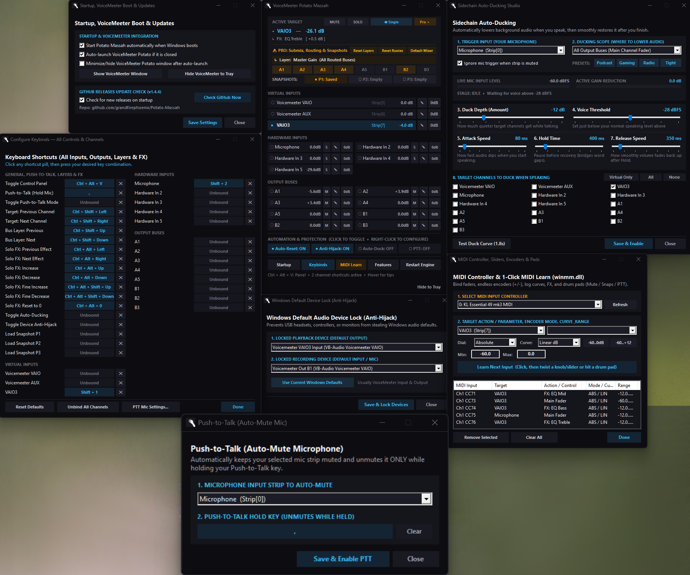

Potato Massah intercepts Windows media volume keys (Volume_Up, Volume_Down, Volume_Mute) and drives VoicemeeterRemote64.dll directly—delivering 20 ms smooth glide, Per-Bus Submix Gain Layers (GainLayer[0..7]), 5-stage Sidechain Auto-Ducking, Windows Default Device Lock ("Anti-Hijack"), Auto-Reset on Device Reconnect, Solo FX & 3-band EQ navigation, 16-channel keybinds, and a Floating Pop-Up HUD.
The panel on the right is a live interactive browser simulator of the native Win32/DWM interface. Drop screenshot.png into your repository root alongside index.html to display a static capture here automatically.

Use the simulator controls below (Vol − / +, Mute, Prev/Next Ch, Layer ▾, or FX) to see the Floating Pop-Up HUD appear at the bottom-center.
Tip: Roll your mouse wheel directly over any channel pill inside the simulator to test Hover-Scroll (±1.0 dB, or Shift + Wheel for ±0.2 dB), Middle-Click any row to mute, or click ✎ to rename any Virtual Input, Hardware Input, or Bus.
Engineered for tactile volume knobs, media wheels, and custom macro pads on Windows 10/11—combining direct 64-bit VoiceMeeter Potato control with non-intrusive audio automation.
Slow single-notch clicks trim by 0.2 dB, while rapid spins scale exponentially up to 4.5 dB per notch. A 20ms interpolation loop eases fader travel with instant direction-reversal braking.
Click Pro ▾ or press Ctrl+Shift+▲/▼ to control Potato-exclusive GainLayer[0–7] submixes per output bus, toggle A1–B3 strip routing live, save/recall P1–P3 mixer snapshots, and reset in one click.
Full 5-stage dynamics envelope (Duck Depth, Voice Threshold, Attack Speed, Hold Time, Release Speed) with live dual dBFS & Gain Reduction meters, mute guard, 1.8s test audition button, and Podcast, Gaming, Radio & Tight presets.
Locks Windows Playback & Recording endpoints via Core Audio COM (IPolicyConfig) so newly connected controllers or monitors can't steal audio, and monitors KSCATEGORY_AUDIO to auto-restart VoiceMeeter 1.8s after USB/Bluetooth reconnects.
Navigate DSP chains with Ctrl+Alt+Arrows (Shift for 0.1 fine steps, Ctrl+Alt+0 reset): Hardware Comp/Gate/Denoiser/Reverb/Delay/FX1–2, Virtual 3-band EQ, and Bus FX Returns.
Click-through bottom-center HUD (+E0x20 +E0x08000000), Hover-Scroll (±1.0 / ±0.2 dB), Middle-Click Mute, renameable Virtual Inputs, inline dB/mute badges on all 16 rows, VoiceMeeter auto-launch/hide, and GitHub update checks.
Click Keybinds in the Control Panel footer to capture any new multi-key combo live. In addition to the defaults below, all 16 I/O channels (Strip[0–7] & Bus[0–7]) have dedicated rebindable slots.
| Action | Default Shortcut | Category | Description |
|---|
Use the pre-compiled standalone executable for instant plug-and-play setup, or build directly from the AutoHotkey v2 source.
.EXE ReleaseIdeal if you just want to run Potato Massah immediately with the custom pinch-knob icon pre-baked into the executable—no AutoHotkey installation required.
C:\Program Files (x86)\VB\Voicemeeter\.
Potato Massah.exe using the direct release button below and place it in its own folder (e.g., C:\Tools\PotatoMassah\).
volume_settings.ini in the same directory to store your active targets, custom channel names, snapshots, automation rules, and keybinds.
Inspect, customize, or compile PotatoMassah.ahk yourself using the official AutoHotkey v2 toolchain.
AutoHotkey64.exe) is installed.
Potato.ico in the same directory as PotatoMassah.ahk (honored automatically via ;@Ahk2Exe-SetMainIcon Potato.ico).
v2.0.x U64 AutoHotkey64.exe. A 64-bit base binary is mandatory so Windows allows LoadLibrary to load VoicemeeterRemote64.dll.